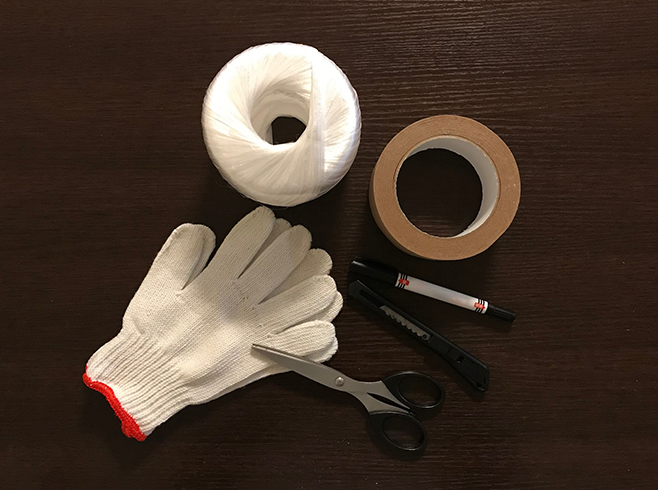

引越し時のチェックポイント
引越し前に準備しておくこと
１．荷づくりに必要な資材をそろえておく
荷造り用のダンボール箱は、引越し会社支給の定型のもの以外は運搬を断られることがあるので事前に確認しておきましょう。また、ガムテープの用意や割れやすい物を包む古新聞を集めておくことも必要です。
２．新居のレイアウトプランを考えておく
入居後に再び家具や電化製品を移動しなくてもいいように、新居のレイアウトプランは引越し前にきちんと考えておきましょう。
３．電話の移転や引込み工事の予約をしておく
固定電話を引いている場合は、NTTの116番へ転居する旨を連絡しておきましょう。また、新居に回線を新設する場合は、引込み工事に本人の立ち合いが必要となるため、引込み工事日の予約をしておきましょう。
４．ガス開栓の予約をしておく
新居の最寄りのガス会社営業所にガスの開栓の予約をしておきましょう。ガスの開栓には、本人の立ち会いが必要なので、早めに日程を決めて予約をしておくとよいでしょう。
５．友人・知人へ新住所を伝える
引越しをすることが決まったら、お世話になっている人や友人に、引っ越すことや新住所などを伝えましょう。
６．荷造りの準備
荷造りをしたダンボール箱の外側に内容を書いておくことが大切です。荷造りを引越し会社に依頼している場合には、自分で管理しておきたい最低限の荷物（貴重品など）は、一つにまとめておくと荷解きのときにすぐわかって便利です。
７．住民票の転出届の手続きをしておく
旧住所の市区町村役場で転出届の手続きを行いましょう。これは、引越し先の新住所を登録するときに必要となるため、必ず交付してもらいましょう（印鑑持参）。
８．郵便局への転送届を提出しておく
郵便局の窓口にある転送届に必要事項を記入しポストに投函しておくと、1年間旧住所に送られてきた郵便物が新住所へ転送されます。
９．冷蔵庫・洗濯機の水抜きをしておく
引越し当日すぐに運搬ができるように、冷蔵庫・洗濯機の水抜きをしておきましょう。
１０．現住居の掃除をしっかりとしておく
これまで住んでお世話になった現在の住居の掃除はしっかり、きちんとしておきましょう。退去時に管理会社（または貸主）立会いのもと住戸内の確認を行いますが、そのときに室内がきれいな方が見る側の心証が違いますし、何より気持ちよく退去できます。
１１．新居の掃除もしておく
新居に荷物を運び込む前に、室内全体を拭き掃除しておきましょう。また、押入れなどの収納部分には、事前に防カビ対策をしておくとよいでしょう。物を置いてしまったあとではなかなか掃除はできないものです。
引越し当日に行うこと

１．荷下ろしにはきちんと立ち会う
引越し会社の車やレンタカーは、大家さんや管理会社の指示に従って、ご近所に迷惑をかけないような場所に止めましょう。事前に駐車場のチェックをしておくことも必要です。また、搬出した荷物の数や傷みの確認もしておくようにしましょう。
２．引越し料金の精算
荷下ろしが終わった時点で支払いを行うので、現金を用意しておきましょう。領収証も忘れずにもらっておきましょう。
３．各設備の点検をする
ドアや扉の開閉はスムーズか、エアコンはきちんと作動するか、水回りでは水漏れがないかなどをきちんと点検しましょう。故障している場合は、すぐに大家さんか管理会社へ連絡を入れることが必要です。
４．ガス・電気・水道の使用開始の連絡をする
新居に置いてある、電気・水道の「入居連絡用ハガキ」に必要事項を記入してポストに投函しましょう。ハガキが見あたらない場合は、最寄りの各営業所に連絡してください（通常、電気・水道はすぐに使用できます）。また、ガスはあらかじめ予約しておいた日に立ち会い、ガス会社の人に開栓してもらう必要があります。
５．掃除・ゴミの処理をしておく
引越し当日は、簡単な掃除や片付けができるよう、雑巾やゴミ袋を用意しておきましょう。荷物を搬入した後には、建物の玄関や廊下を散らかしていないか、チェックを忘れずに。
引越し後に必要なこと
１．役所に転入届の手続きをする
転入届の手続きは、市区町村役場で行います。その際、あらかじめ交付を受けておいた転出証明書と印鑑を忘れずに持っていきましょう。
２．運転免許証の住所変更を行う
新住所の所轄の警察署で手続きを行いましょう。運転免許証とその他保険証などの身分証明書を持参することを忘れずに。
３．車庫証明の手続きを行う
新しい車庫（または駐車場）が確保できたら、新住所の所轄の警察署で手続きを行う必要があります。自宅に車庫がある場合は、見取り図・配置図、印鑑を持参。自宅以外に駐車場を借りる場合は、見取り図・配置図、印鑑のほかに駐車場の管理者が発行する「使用承諾書」が必要です。
※警察署により異なる場合があるので、あらかじめ確認しておきましょう。
４．銀行口座の住所を変更する
住所が変わるので、取引銀行の支店の窓口に届け出る必要があります（通帳と印鑑＜通帳印＞が必要です）。
５．クレジットカードの住所変更をする
クレジットカードの裏面に記載されている連絡先に電話をし、住所変更用の届出用紙を郵送してもらいます。これに、必要事項を記入して返送する必要があります。インターネットでできる場合もあるので、カード会社のホームページなどで確認するといいでしょう。